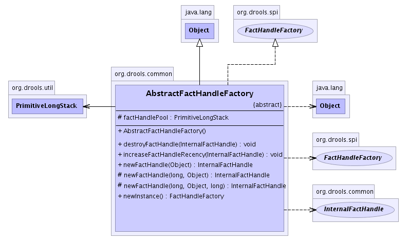

org.drools.common
Class AbstractFactHandleFactory
java.lang.Object
 org.drools.common.AbstractFactHandleFactory
org.drools.common.AbstractFactHandleFactory
- All Implemented Interfaces:
- java.io.Serializable, FactHandleFactory
- Direct Known Subclasses:
- Jsr94FactHandleFactory, ReteooFactHandleFactory
public abstract class AbstractFactHandleFactory
- extends java.lang.Object
- implements FactHandleFactory
- See Also:
- Serialized Form
-
- 
| Methods inherited from class java.lang.Object |
clone, equals, finalize, getClass, hashCode, notify, notifyAll, toString, wait, wait, wait |
factHandlePool
protected final PrimitiveLongStack factHandlePool
AbstractFactHandleFactory
public AbstractFactHandleFactory()
newFactHandle
public final InternalFactHandle newFactHandle(java.lang.Object object)
- Description copied from interface:
FactHandleFactory
- Construct a handle with a new id.
- Specified by:
newFactHandle in interface FactHandleFactory
- Returns:
- The handle.
newFactHandle
protected final InternalFactHandle newFactHandle(long id,
java.lang.Object object)
newFactHandle
protected abstract InternalFactHandle newFactHandle(long id,
java.lang.Object object,
long recency)
increaseFactHandleRecency
public final void increaseFactHandleRecency(InternalFactHandle factHandle)
- Description copied from interface:
FactHandleFactory
- Increases the recency of the FactHandle
- Specified by:
increaseFactHandleRecency in interface FactHandleFactory
- Parameters:
factHandle - The fact handle to have its recency increased.
destroyFactHandle
public void destroyFactHandle(InternalFactHandle factHandle)
- Specified by:
destroyFactHandle in interface FactHandleFactory
newInstance
public abstract FactHandleFactory newInstance()
- Specified by:
newInstance in interface FactHandleFactory
- Returns:
- a fresh instance of the fact handle factory, with any IDs reset etc.